DN-SLAM: A Visual SLAM With ORB Features and NeRF Mapping in Dynamic Environments
Chenyu Ruan , Qiuyu Zang , Kehua Zhang , and Kai Huang
Abstract—Vision simultaneous localization and mapping (SLAM) is essential for adapting to new environments and for localization and is therefore widely used in robotics. However, accurate location estimation and map consistency remain challenging issues in dynamic environments. In addition, building dense scene maps is critical for spatial artificial intelligence (AI) applications such as visual localization and navigation. We propose a visual SLAM with ORB features and NeRF mapping in dynamic environments (DN-SLAM), a visual SLAM system based on oriented FAST and rotated BRIEF (ORB)-SLAM3, which uses ORB features to track dynamic
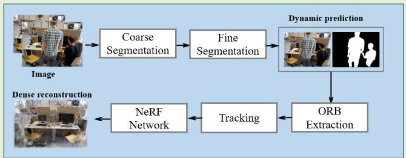
objects, uses semantic segmentation to obtain potentially moving objects, and combines optical flow and the segment anything model (SAM) to perform fine segmentation and reduce the redundancy by culling dynamic objects to enhance the performance of the SLAM system in dynamic environments. Meanwhile, 3-D rendering using neural radiation field removes dynamic objects and renders them. We performed experiments on both the Technical University of Munich (TUM) red, green, blue (RGB)-D dataset and the Bonn dataset, and we compared our results with the advanced dynamic SLAM algorithms available. Our findings reveal that, when compared to ORB-SLAM3, DN-SLAM significantly improves trajectory accuracy in highly dynamic environments and achieves more accurate localization than other advanced dynamic SLAM methods and successful 3-D reconstruction of static scenes.
Index Terms— Dynamic objects, neural radiation fields, segment anything model (SAM), semantic segmentation, vision simultaneous localization and mapping (SLAM).
I. INTRODUCTION
IMULTANEOUS localization and mapping (SLAM) is a S technique used to estimate the position of robots, selfdriving vehicles, and other objects in unfamiliar environments. It finds extensive application in various domains, including virtual reality (VR) and augmented reality (AR). A prerequisite for success in fields such as space artificial intelligence (AI) or robot navigation is a comprehensive understanding of the dynamic objects present in the surrounding environment. Vision SLAM has received a lot of attention from researchers because the vision sensors used in vision SLAM are easy to integrate, low cost, and low energy consumption compared to SLAM using LiDAR [1], [2], [3] sensors. Utilizing accurate maps is essential for gaining a better understanding of the unknown scene. Visual SLAM captures detailed visual data that helps robots, AR/VR, and other applications comprehend the semantic knowledge of the environment and take appropriate actions.
Traditional visual-based SLAM systems [4], [5] rely on the assumption of a static environment. This assumption poses challenges in achieving accurate localization and mapping when dynamic objects are present. Traditional vision SLAM focuses on localization accuracy, but it only generates rough maps. The main focus of this topic is to minimize the trajectory error of visual SLAM systems in dynamic environments while concurrently producing more densely populated maps.
Numerous SLAM systems have been devised as remedies to improve the accuracy of SLAM trajectories in dynamic scenarios. Many SLAM algorithms [6], [7], [8], [9], [10], [11] have proposed solutions for dynamic environments, which include using semantic information, employing dynamic prediction through target detection algorithms, and utilizing various other methods. All of these approaches aim to mitigate the effects of dynamic objects and can significantly enhance localization accuracy, especially in dynamic environments. However, these SLAM systems still exhibit inaccuracies in detecting the boundaries of dynamic targets.
As neural radiance fields (NeRFs) advance quickly, its implicit neural representation has proved to be highly efficient in dense visual SLAM. Exploring the use of NeRFs as visual SLAM maps is a potential direction. Imap [12] was the first study to use NeRF as an SLAM map representation, demonstrating how to construct accurate 3-D reconstructions using red, green, blue (RGB)-D images without the need for poses. NICE-SLAM [13] employs a hierarchical structure with an occupancy network to track and construct maps, while Orbeez-slam [14] utilizes oriented FAST and rotated BRIEF (ORB)-SLAM to provide the initial positional pose and allows for rapid NeRF-SLAM without the need for pretraining of new scenes, enabling real-time inference. However, they all lack the ability to adapt to dynamic environments, and dynamic scenes can greatly affect the SLAM estimation of positional accuracy and 3-D reconstruction results.
We propose a dense SLAM system for dynamic environments by combining a feature-based SLAM system (ORB-SLAM3 [5]) and NeRF based on the instant-ngp framework [15]. The system accepts the RGB-D sensor image input and the dynamic information is obtained using an optical flow estimation method, which first uses a coarse segmentation network for coarse segmentation to obtain a coarse dynamic region and then a fine segmentation network for fine segmentation to obtain an exact dynamic region. We pay more attention to the static region feature point information for mapping in order to improve the trajectory accuracy within the SLAM system. We specifically emphasize the static region to construct a densely populated map and prevent the mapping algorithm from considering moving objects as an integral part of the 3-D map. The key contributions of our work can be summarized as follows.
1) We used semantic segmentation to obtain potentially moving objects, combined with optical flow estimation and segment anything model (SAM) for fine segmentation of dynamic objects, eliminating dynamic objects and selecting the most valuable feature of the static feature points as a good feature to match, reducing mapping errors in the dynamic environment.
2) By combining visual odometry with the NeRF framework, dynamic objects were culled and dense maps were generated, 3-D reconstruction was performed in dynamic environments, and backgrounds obscured by dynamic objects were repaired.
3) Experiments were performed on the Technical University of Munich (TUM) dataset and the Bonn dataset and were compared against other sophisticated dynamic SLAM algorithms, and a visual SLAM with ORB features and NeRF mapping in dynamic environments (DN-SLAM) achieved better results in most sequences. Also, compared to the original ORB-SLAM3, DN-SLAM achieves a substantial enhancement in localization accuracy can be achieved through the use of DN-SLAM, particularly in environments with high dynamics.
II. RELATED WORK
A. Visual SLAM Systems for Dynamic Environments
In most SLAM systems, designed for stationary objects, the existence of dynamic objects can cause changes in the geometry of the scene, leading to errors in the maps and biasing the SLAM system’s understanding of the environment.
To effectively detect and filter dynamic features and improve the accuracy of SLAM in dynamic environments, features extracted from moving objects should be prevented from being used in the tracking process.
In recent years, much research endeavors have been dedicated to enhancing the resilience of SLAM systems in dynamic environments, with particular emphasis on visual SLAM systems operating in dynamic surroundings. DynaSLAM [6] employs a deep learning approach that combines the semantic segmentation network with ORB-SLAM2 to tackle this challenge. This integration provides DynaSLAM with dynamic target detection and background mapping capabilities, which effectively minimize trajectory errors in dynamic environments. RS-SLAM [16] combines semantic information with a Bayesian updating and contextual information-based moving object detection method to remove dynamic interference. WF-SLAM [8] integrates both semantic and geometric data to identify dynamic targets and employs weighted features to handle dynamic objects. Zhang et al. [10] integrated YOLOv5 target detection into the SLAM system for dynamic feature point rejection of potentially dynamic points within the dynamic frame, while Guan et al. [11] also combined YOLOv5 with SLAM to reject dynamic regions, both improving the tracking module and the localization accuracy of SLAM. All these SLAM systems have achieved excellent results in dynamic environments, but these dynamic SLAMs still have some errors for edge detection of dynamic objects.
B. Neural Radiance Fields
To represent 3-D scenes, explicit representations typically use data structures, such as point clouds [17], [18], voxels [19], [20], [21], and meshes [22], [23]. The accuracy of the reconstruction results of such explicit reconstruction methods is strongly related to memory usage, which requires a huge amount of space to store the information. The implicit surface representation has gained widespread adoption in recent years due to its ability to mitigate space-related issues. Viewdependent effects can be captured while maintaining multiview consistency using NeRF [24], a novel implicit neural representation. However, the long training time is its drawback, so in recent years, research has been carried out to improve the speed of NeRF, such as MVS-NeRF [25], which uses planar scanning 3-D cost volume for geometric perceptual scene understanding and produces realistic view synthesis results obtained with a limited number of images while speeding up the rendering speed. Point-NeRF [26] utilizes a point cloud to render scenes, which optimizes the aggregation of neural point features near the surface of the scene within a rendering pipeline based on light traveling, greatly speeding up NeRF rendering. Instant-ngp [15] developed a framework that can leverage multiresolution hash coding and a compute unified device architecture (CUDA) platform, further speeding up NeRF rendering in a matter of seconds.
C. Neural Implicit-Based SLAM
In order for SLAM to produce dense maps, neural ray tracing is a promising approach. Neural ray tracing has some dependence on estimated camera poses, which are usually acquired by processing the image data through COLMAP [27]. In more recent work, some methods [28], [29], [30], [31] use
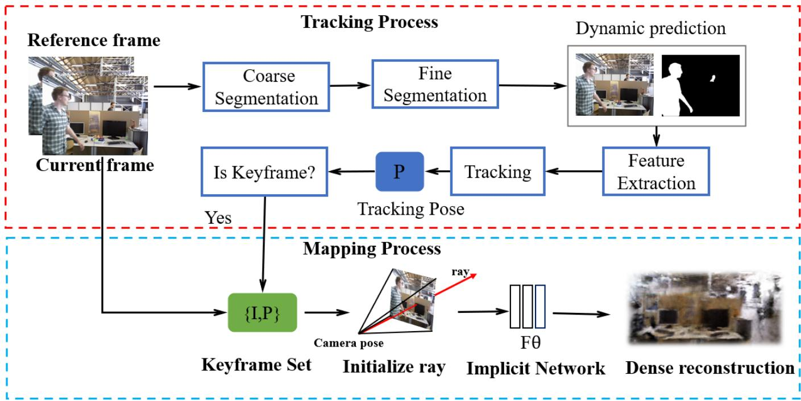
Fi S i Th ki h d id i i b d h i f d h f hil d i points are obtained from optical flow estimation. Based on the dynamic information, an initial segmentation of the image is performed, followed by further fine segmentation to remove the dynamic parts. The mapping thread runs concurrently with the tracking thread to provide image and pose information for NeRF, and the static parts are ray-sampled for NeRF rendering to generate a dense point cloud.
RGB-(D) inputs to predict scene-level geometry, but they do so under the assumption of a given camera pose. How to eliminate the dependence on partially known camera poses is also a popular research direction.
In terms of SLAM-related applications, several works [32], [33] have attempted to jointly optimize NeRFs and camera poses. IMap [12] was the first to show how to construct accurate 3-D reconstructions using NeRFs without poses, using RGB-D images. Nice-SLAM [13] introduces a hierarchical scene representation using learning from the volumetric partitioning of space. Nice-SLAM optimizes the camera pose and the hierarchical neural implicit map representation using locally adaptive SDF volume density transformation for detailed reconstruction on indoor scenes. While Orbeez-SLAM [14] uses ORB-SLAM2 [34] to provide the initial pose, combining implicit neural representations and visual odometry, none of these studies deal well with dynamic environments, and the accuracy of camera poses obtained from their dynamic environments decreases significantly, as well as the effect of dynamic objects leading to degradation in the quality of the reconstruction.
The aim of our work is to develop a visual SLAM system that can adapt to dynamic environments and provide dense maps for complex tasks. Our SLAM system is able to overcome these shortcomings by accurately locating dynamic objects while rejecting dynamic information, providing accurate trajectory estimation in dynamic environments, and remaining robust when constructing dense maps.
III. SYSTEM DESCRIPTION
An overview of our system, which utilizes ORB-SLAM3 as its foundation, using it to provide the initial camera position, is presented in Fig. 1. The system accepts image data from the RGB-D sensor, the system’s tracking thread processes the dynamic scene, and the dynamic information is extracted by two segmentation networks: coarse segmentation and fine segmentation . The mapping thread and the tracking thread are executed simultaneously to optimize the camera position and light sampling and to render the scene. Finally, a dense point cloud is obtained after removing dynamic objects.
A. Coarse Segmentation ofDynamic Objects
Our use of a semantic segmentation network is to segment image features and detect objects with potential motion possibilities (e.g., people, dogs, and chairs). Our objective is to identify and segment these objects within an image. Segmentation is a widely explored field in the realm of computer vision research, with semantic segmentation specifically aiming to assign appropriate labels to each pixel, effectively segmenting an image into multiple semantic categories. As shown in Fig. 2, we use an encoder–decoder-based model, with a deep residual network (ResNet) [35] as the semantic segmentation encoder. ResNet is a classical model that solves the problem of gradient vanishing and model degradation in deep neural networks by introducing residual blocks and jump connections with high model reusability and training effectiveness. We use a decoder model that utilizes the pyramid pooling module [36], which is able to perform pooling operations at different scales, aggregating different ranges of global contextual information, thus improving the network’s ability to detect targets at different scales and increasing the accuracy of the segmentation results. For the semantic segmentation task, we employ the ADE20K dataset [37], [38] as our primary dataset. Fig. 3(b) shows the mask obtained by semantic segmentation of the image.
The semantic information is then combined with optical flow estimation to obtain more accurate dynamic informaptember 16,2026 at 03:41:22 UTC from IEEE Xplore. Restrictions apply.
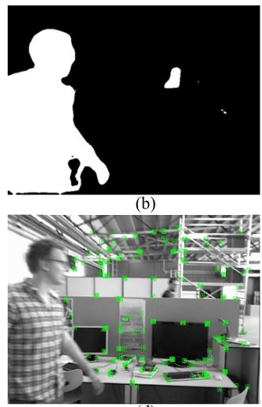
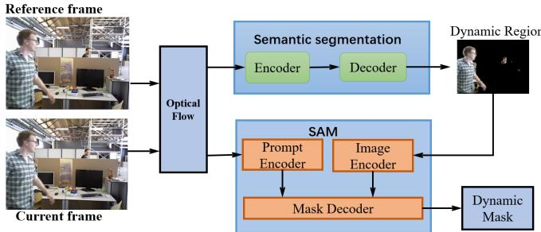
Fig. 2. Specific process for the two splits. Semantic segmentation is employed to identify potential motion, and then, optical flow is used in conjunction with the dynamic region to determine the dynamic mask. SAM performs segmentation based on the optical flow and dynamic region to generate the ultimate dynamic mask.
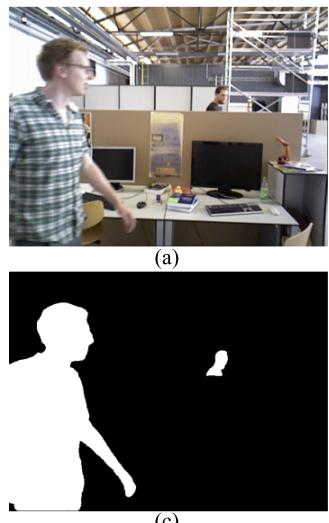
(c)
(d)
Fig. 3. Dynamic mask results obtained by segmenting the dynamic scene. (a) Original image. (b) Initial mask obtained by performing the initial segmentation. (c) Result after performing the fine segmentation. (d) Effect of feature extraction based on the mask on the static region only.
tion. Optical flow provides information about the motion of moving objects, but in reality, the optical flow field does not always reflect the actual motion of the target. In addition, the estimation of optical flow is often inaccurate, and brightness variations can affect its accuracy, causing stationary objects to be identified as dynamic. Therefore, we use semantic segmentation for preliminary segmentation to obtain objects with motion possibilities, combine the dynamic point information obtained from the optical flow estimation to judge the moving objects, and use the fine segmentation network to extract the image frame for segmentation to obtain more accurate dynamic information in the scene.
B. Fine Segmentation
After the initial segmentation of the dynamic object, the SAM [39] is used to perform a finer segmentation of the dynamic object to achieve better culling of dynamic objects, as shown in Fig. 2. SAM is a new task, dataset, and model for image segmentation proposed by MataAI. It is a generalization of two classes of classification methods: interactive segmentation and automatic segmentation. By introducing a cued segmentation task to generate a valid segmentation mask based on any given segmentation cue. This can perform a wide range of segmentation tasks. In our system, the dynamic information is obtained based on semantic segmentation, the dynamic points obtained from optical flow estimation are used as prompts for SAM, the dynamic information is finely segmented using SAM, and the mask obtained after segmentation is shown in Fig. 3(c).
We only extract features from the static part, as the segmented dynamic area is deemed invalid. To enhance the precision of camera pose estimation, we adopt a feature point adaptation technique to eliminate the feature points of dynamic objects and adjacent areas. After performing dynamic object processing, feature points are extracted from the image, and among the acquired feature points, we invalidate those near the dynamic region so that feature matching is performed using only the feature points in the static region.
To reduce computational complexity and improve camera position estimation accuracy, we limit our focus to information within a one-pixel distance around each feature point. If we detect any dynamic regions within this specified distance, we discard the feature point. After generating static frames, our active map filters new keyframes and optimizes the map to ensure accuracy and efficiency. We limit our focus to information within a one-pixel distance around each feature point. If we detect any dynamic regions within this specified distance, it will be considered a dynamic feature point and will be removed from map building and positioning.
After removing the dynamic feature points, selecting suitable static feature points for matching is also a critical issue. Good feature selection and matching algorithms [40], [41] link the work of feature matching with submatrix selection and use optimized stochastic greedy Max-logDet for feature selection: logdet , where denotes the set of feature points in a scan, denotes the amount of good features set, and is the information matrix of the good features set, and each round of greedy selection evaluates a random subset of candidates to determine the current “best” feature. This method reduces the delay while maintaining accuracy and robustness, and for the remaining static feature points, good feature selection is performed on them and the most valuable features are selected as good features to improve the stability of the slam system.
At the same time, when a dynamic object occupies most of the area in the entire image, only a few static points remain after eliminating the dynamic elements. This reduction in static points can impact the accuracy of the SLAM system. Therefore, we identify the dynamic regions in the final segmentation of the scene. If the dynamic region occupies more than 50%, it is considered that the number of feature points is insufficient to ensure precise localization. In such cases, we increase the feature point density, allowing us to extract more feature points from the same area. This means that more feature points are extracted in the same area. By combining this approach with a robust feature matching algorithm, we select high-quality feature points to enhance the accuracy of both matching and positioning.
C. Neural Radiance Field Rendering
We use NeRF for 3-D rendering to generate dense point clouds. NeRFs [24], a novel viewpoint synthesis technique with an implicit scene representation, utilize a series of 2- D images captured from different viewpoints. These images are trained to create a comprehensive 3-D model. The inputs to the NeRF function are positional and angular information, and it accepts as input a 5-D vector consisting of a spatial point position (x, y, z) and an observation direction This is used to create an “implicit representation” of the D scene by using a multilayer perceptron (MLP) network model to approximate the mapping relationship between input and output. The pixel value C(r) projected onto the image is obtained as follows:
where
The output color and bulk density of the rays are denoted as . In the NeRF rendering step, the colors and voxel densities of the 3-D points obtained from the reconstruction process are used to integrate along the rays and obtain the final 2-D image pixel values. This integration is performed according to the cumulative transmittance of the rays on the path from t to t′. By employing this integration process, the colors C(r) within the near and far boundaries [t, t′] can be obtained.
In practice, it can be challenging for NeRF to accurately estimate continuous 3-D information. Therefore, the quadrature method is utilized to numerically estimate the continuous integrals. To represent the continuous scene, stratified sampling is employed to divide the region over which the ray must be integrated into n parts. In each small region, uniform random sampling is performed. The distance between two adjacent sampling points, and is denoted by By estimating these sampling points, C(r) can be calculated as follows:
where
We perform NeRF rendering of the image frames after processing the dynamic environment, which first needs to pass the bit position to NeRF as an input. The camera pose is estimated using SLAM and the optimization of the pose is carried out by using the reprojection error [42], which is given as follows:
is denoted as the pixel coordinates of the 3-D projected point observed by the camera . The projection of the 3-D point to the pixel coordinates is represented by where is used for the projection, with the rotation matrix R and the translation vector t, as well as the camera internal reference if there is a projection. We use local bundle adjustment (BA) for pose estimation and pose optimization by minimizing the reprojection error.
After entering the camera position and keyframes into the NeRF, the NeRF was light-sampled, we focused on sampling only the static regions and optimized using a photometric loss, which uses an loss between the measured and observed color values of the statically sampled pixels, with the following formula:
While the tracking thread is running, the mapping thread performs NeRF rendering, where we decide whether to render or not using the mask obtained by splitting the dynamic region and generate an image by light sampling each point in the scene to compute the radiance of the light as it passes through the point. Since the dynamic part is outside our sampling range, the dynamic part will be artifacted during rendering. After the dynamic object leaves the scene, the background obscured by the dynamic object in the previous rendering is repaired in the subsequent rendering to achieve the effect of background repair.
IV. EXPERIMENTS
In this section, we conduct a series of experiments to demonstrate the effectiveness of DN-SLAM. We assessed the performance of our system on two publicly available datasets, namely, TUM RGB-D and Bonn. In order to evaluate its effectiveness, we compared our system with the original ORB-SLAM3 as well as other advanced SLAM systems in both high dynamic scenes and low dynamic environments. To evaluate the tracking results, we used the absolute trajectory error (ATE) and the relative posture error (RPE), which are commonly used as error metrics. We also evaluated the standard deviation (S.D), a measure that indicates the range and stability of the error distribution, with smaller S.Ds indicating more focused and stable data. To account for the uncertainty in the system, each sequence was executed five times, and the median result was calculated for each experiment. All experiments were conducted on a computer equipped with an Intel i9 CPU, an RTX4090 GPU, and 32 GB of RAM.
A. Experiments on the TUM Dataset
The TUM dataset is widely utilized as a benchmark for the evaluation of SLAM systems [44]. The TUM-RGB-D dataset encompasses authentic indoor image sequences, comprising RGB and depth images, and corresponding ground-truth data. The sitting category in the dynamic objects of the TUM dataset consists of four sequences depicting two individuals engaged in conversation while seated at a desk, occasionally making small gestures, and this particular scene has low dynamics, making it suitable for evaluating the visual SLAM system’s ability to handle slow-moving dynamic objects. In the four sequences in the walking category, there are two people walking through an office with high dynamic objects. Localization accuracy and robustness can be compromised due to the existence of feature points in areas with intense dynamic motion, as it can introduce false spatial constraints.
TABLE I
ABSOLUTE TRACE ERROR RMSE (M) RESULTS OF ABLATION EXPERIMENTS OF DN-SLAM USING DIFFERENT METHODS
| Sequence | |||
| f3/w-xyz | 0.016 | 0.017 | 0.015 |
| f3/w-rpy | 0.043 | 0.179 | 0.032 |
| f3/w-half | 0.029 | 0.244 | 0.026 |
| f3/w-static | 0.008 | 0.009 | 0.008 |
| f3/s-xyz | 0.014 | 0.011 | 0.011 |
| f3/s-half | 0.020 | 0.017 | 0.014 |
Furthermore, this also provides an opportunity to evaluate the visual SLAM system’s ability to handle fast-moving dynamic objects.
Table I shows the effect of the performance of the coarse segmentation or fine segmentation systems added individually or together. The system performance is evaluated using the root mean square error (RMSE). Here, represents the use of coarse segmentation only, where objects with motion possibilities are predicted and combined with optical flow estimation to weed out the objects. represents the use of fine segmentation only, where dynamic points obtained from optical flow detection are used as cues for SAM to segment and cull the objects, and represents the use of a combination of two segmentations. From the results, it is evident that both segmentation options outperform the other two methods and exhibit the highest level of accuracy.
The segmentation results of are not accurate enough to reliably remove dynamic information, while may lose some feature point information due to the inaccuracy of optical flow estimation for dynamic points, which may cause the SLAM system to remove static parts that are actually necessary. The accuracy of the result of using two segmentations for dynamic objects and the accuracy of the camera pose estimation are useful for NeRF in the mapping thread to complete a more accurate 3-D reconstruction of the static image. Thereafter, all experimental results we show use the method.
Tables II and III show the results of comparing DN-SLAM with ORB-SLAM3 [5] and two of the most advanced dynamic SLAM systems, DynaSLAM [6] and LC-SLAM [43], on TUM RGB-D dynamic sequences. All four sequences of Fr3/walking are dynamic scenes, and in this setting with highly dynamic objects, DN-SLAM has a significant improvement over ORB-SLAM3, up to 96.7% under high dynamics. All of them also achieve better results compared to other advanced dynamic SLAM algorithms, and in general, the error is only around 1–3 cm; its accuracy is similar to that estimated in static scenarios. For the low dynamic scene sequences of Fr3/sitting, similar results were obtained with the original ORB-SLAM3.
Fig. 4 shows the ATE between the estimated trajectories and the ground truth for DN-SLAM, ORB-SLAM3, and other advanced dynamic SLAM algorithms. The variation between the estimated (blue) and ground-truth (black) trajectories is emphasized in red. Upon examination, it becomes evident that the original ORB-SLAM3 suffers from significant errors in highly dynamic sequences such as fr3/walking-xyz and fr3/walking-rpy, whereas our proposed method is able to produce estimated trajectories that closely align with the original trajectories.
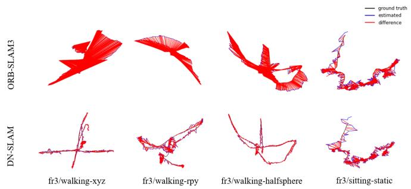
Fig. 4. Camera trajectory results estimated by ORB-SLAM3 and DN-SLAM on the TUM dataset sequences, and the differences with ground-truth values.
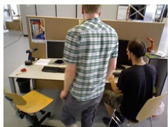
(a)
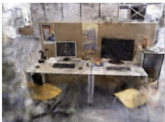
(b)
Fig. 5. Results of 3-D reconstruction of the fr3/walking-half-space sequence of the TUM dataset using DN-SLAM, which reconstructs the static part only. (a) Input. (b) Reconstruction.
The effect of our system after NeRF rendering for fr3/walking-halfsphere in the sequence of the TUM dataset is shown in Fig. 5. We pay more attention to the sampling of the static part, and NeRF rendering is carried out at the same time of tracking in SLAM. When the dynamic object leaves the scene, the NeRF corrects the lost part of the previous rendering (the dynamic part) to achieve the effect of repairing the background, which completes the rendering of the static scene. DN-SLAM reduces the influence of the dynamic environment, making the estimation of the camera position more accurate, and providing a more accurate camera position for the rendering of the NeRF to achieve a better rendering effect in the dynamic environment. DN-SLAM enables the differentiation of the stationary environment from the moving elements within it, allowing for the visualization of the static scene, which can be used in VR and other applications.
B. Experiments on the Bonn Dataset
The Bonn RGB-D dynamic dataset [45] comprises 24 dynamic sequences, including crowd walking, balloon throwing, and moving boxes. The ground-truth camera trajectory is accessible for every scene. For our performance evaluation experiments, we chose nine representative sequences from the Bonn dataset. The “balloon” sequence captures the moment when someone throws a balloon, while the “crowd” sequence depicts three individuals walking randomly in an indoor setting. The “moving_no_box” sequence depicts one person moving the box, while the “moving_o_box” sequence shows two people moving a large box that almost entirely fills the camera frame. The person-tracking sequence involves the camera tracking a person walking slowly. These nine sequences capture highly dynamic scenes and are more challenging than those of the TUM dataset. They feature more complex dynamics that significantly reduce the accuracy of the SLAM system.
TABLE II
COMPARISON OF ABSOLUTE TRACE ERROR (M) RESULTS OF DIFFERENT METHODS ON TUM DATASETS
| Sequence | ORB-SLAM3 [5] | DynaSLAM [6] | LC-SLAM [43] | OURS | Improvements | |||||
| RMSE | S.D | RMSE | S.D | RMSE | S.D | RMSE | S.D | RMSE(%) | S.D(%) | |
| fr3/w-xyz | 0.454 | 0.242 | 0.015 | 0.008 | 0.024 | 0.013 | 0.015 | 0.007 | 96.7 | 97.1 |
| fr3/w-rpy | 0.761 | 0.430 | 0.037 | 0.023 | 0.055 | 0.036 | 0.032 | 0.019 | 95.8 | 95.6 |
| fr3/w-static | 0.027 | 0.018 | 0.008 | 0.004 | 0.016 | 0.009 | 0.008 | 0.003 | 70.4 | 83.3 |
| fr3/w-half | 0.362 | 0.107 | 0.030 | 0.016 | 0.041 | 0.019 | 0.026 | 0.013 | 92.8 | 87.9 |
| fr3/s-xyz | 0.009 | 0.005 | 0.013 | 0.006 | 0.012 | 0.005 | 0.011 | 0.005 | - | - |
| fr3/s-half | 0.022 | 0.003 | 0.020 | 0.009 | 0.022 | 0.011 | 0.014 | 0.008 | 36.4 | – |
TABLE III
COMPARISON OF RELATIVE POSE ERROR (M/S) RESULTS OF DIFFERENT METHODS ON TUM DATASETS
| Sequence | ORB-SLAM3 [5] | DynaSLAM [6] | LC-SLAM [43] | OURS | Improvements | |||||
| RMSE | S.D | RMSE | S.D | RMSE | S.D | RMSE | S.D | RMSE(%) | S.D(%) | |
| fr3/w-xyz | 0.366 | 0.276 | 0.024 | 0.010 | 0.036 | 0.017 | 0.024 | 0.008 | 93.4 | 97.1 |
| fr3/w-rpy | 0.424 | 0.240 | 0.085 | 0.044 | 0.086 | 0.046 | 0.065 | 0.032 | 84.7 | 86.7 |
| fr3/w-static | 0.049 | 0.023 | 0.013 | 0.004 | 0.016 | 0.007 | 0.011 | 0.003 | 77.6 | 87.0 |
| fr3/w-half | 0.241 | 0.177 | 0.039 | 0.016 | 0.051 | 0.024 | 0.035 | 0.013 | 85.5 | 92.7 |
| fr3/s-xyz | 0.012 | 0.004 | 0.017 | 0.007 | 0.019 | 0.008 | 0.015 | 0.005 | - | - |
| fr3/s-half | 0.030 | 0.016 | 0.034 | 0.016 | 0.026 | 0.012 | 0.017 | 0.009 | 43.3 | 43.8 |
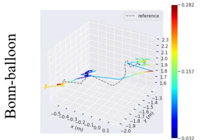
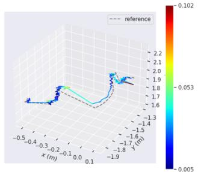
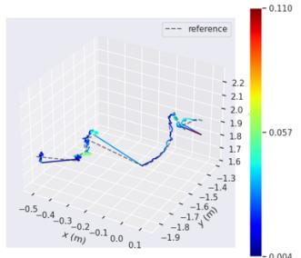
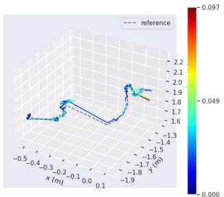
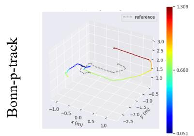
ORB-SLAM3
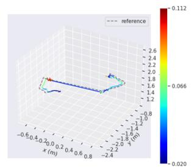
DynaSLAM
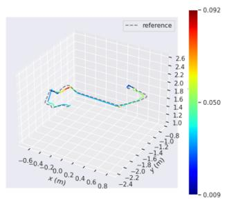
LC-SLAM
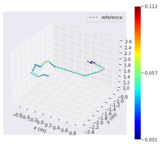
DN-SLAM
Fig. 6. Camera trajectories estimated by ORB-SLAM3, DynaSLAM, LC-SLAM, and DN-SLAM in the Bonn dataset sequences balloon and person tracking, and the differences from ground truth.
Table IV presents the outcomes of our experiments conducted on the Bonn RGB-D dynamic dataset, where we tested two advanced dynamic SLAM algorithms: DynaSLAM [6] and LC-SLAM [43], on the same equipment, comparing the ATE and the S.D. It can be seen that in the Bonn dataset, where the dynamic information is more complex, our system is still able to eliminate the dynamic factors and achieve good results, and even when the dynamic objects cover a large part of the whole region, such as some frames in the “crowd” sequence, our algorithm is still able to make adjustments to achieve good localization performance. In most sequences, our system outperforms the original ORB-SLAM3, significantly improving the accuracy of trajectory estimation.
In Fig. 6, we evaluate the disparity between the estimated trajectories and the corresponding ground truth for various algorithms in Bonn-balloon and Bonn-person tracking, which more intuitively shows that in dynamic scenarios, ORB-SLAM3 shows significant discrepancies between the estimated trajectories and the ground truth, mainly due to dynamic object interferences such as the presence of a person or a balloon, and the DN-SLAM handles the dynamic objects well and achieves better results.
TABLE IV
COMPARISON OF ABSOLUTE TRACE ERROR (M) RESULTS OF DIFFERENT METHODS ON BONN DATASETS
| Sequence | ORB-SLAM3 [5] | DynaSLAM [6] | LC-SLAM [43] | OURS | ||||
| RMSE | S.D | RMSE | S.D | RMSE | S.D | RMSE | S.D | |
| balloon | 0.158 | 0.063 | 0.034 | 0.015 | 0.033 | 0.015 | 0.030 | 0.012 |
| balloon2 | 0.126 | 0.054 | 0.032 | 0.014 | 0.026 | 0.011 | 0.025 | 0.012 |
| crowd | 0.980 | 0.601 | 0.025 | 0.013 | 0.022 | 0.011 | 0.025 | 0.016 |
| crowd2 | 0.628 | 0.357 | 0.029 | 0.017 | 0.038 | 0.022 | 0.028 | 0.017 |
| crowd3 | 0.367 | 0.216 | 0.037 | 0.021 | 0.035 | 0.023 | 0.026 | 0.014 |
| person_tracking | 0.698 | 0.327 | 0.047 | 0.015 | 0.044 | 0.014 | 0.038 | 0.015 |
| person_tracking2 | 0.786 | 0.454 | 0.126 | 0.072 | 0.045 | 0.015 | 0.042 | 0.017 |
| moving_no_box | 0.323 | 0.115 | 0.020 | 0.010 | 0.021 | 0.009 | 0.026 | 0.014 |
| moving_o_ box2 | 0.796 | 0.359 | 0.262 | 0.118 | 0.295 | 0.145 | 0.120 | 0.061 |
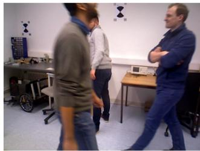
(a)
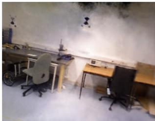
(b)
Fig. 7. Results of 3-D reconstruction of the bonn-crowd sequence of the Bonn dataset using DN-SLAM, which reconstructs the static part only. (a) Input. (b) Reconstruction.
The reconstruction effect of DN-SLAM on crowd sequences in the Bonn dataset is shown in Fig. 7. It can be seen that the walking crowd is not rendered, allowing the reconstruction of a static scene. The removal of dynamic interference leads to a more accurate estimation, which improves the quality of the reconstruction.
V. CONCLUSION
This article presents a NeRF-SLAM algorithm specifically designed for dynamic environments, which integrates a semantic segmentation network and an SAM for two segmentations of objects with potential motion and moving objects. The reliability of the SLAM system in dynamic environments is improved by removing dynamic features within the dynamic scene while preserving static regions as much as possible, removing feature points within the dynamic regions and at the mask edges that may affect matching accuracy, and preserving feature point information in the static regions. We also use the fast NeRF framework to generate dense maps, greatly speeding up rendering without the need for pretraining.
DN-SLAM still has shortcomings. It is still slow when dealing with dynamic environments, especially when using the SAM for fine segmentation. It is challenging to achieve real-time performance of the entire system so that it can be applied in real scenarios. The future direction of work is how to improve the real-time performance of DN-SLAM.
REFERENCES
[1] S. Chen et al., “NDT-LOAM: A real-time LiDAR odometry and mapping with weighted NDT and LFA,” IEEE Sensors J., vol. 22, no. 4, pp. 3660–3671, Feb. 2022.
[2] H. Zhou, Z. Yao, Z. Zhang, P. Liu, and M. Lu, “An online multi-robot SLAM system based on LiDAR/UWB fusion,” IEEE Sensors J., vol. 22, no. 3, pp. 2530–2542, Feb. 2022.
[3] T. Li et al., “P3-LOAM: PPP/LiDAR loosely coupled SLAM with accurate covariance estimation and robust RAIM in urban canyon environment,” IEEE Sensors J., vol. 21, no. 5, pp. 6660–6671, Mar. 2021.
[4] T. Qin, P. Li, and S. Shen, “VINS-mono: A robust and versatile monocular visual-inertial state estimator,” IEEE Trans. Robot., vol. 34, no. 4, pp. 1004–1020, Aug. 2018.
[5] C. Campos, R. Elvira, J. J. G. Rodríguez, J. M. M. Montiel, and J. D. Tardós, “ORB-SLAM3: An accurate open-source library for visual, visual–inertial, and multimap SLAM,” IEEE Trans. Robot., vol. 37, no. 6, pp. 1874–1890, Dec. 2021.
[6] B. Bescos, J. M. Fácil, J. Civera, and J. Neira, “DynaSLAM: Tracking, mapping, and inpainting in dynamic scenes,” IEEE Robot. Autom. Lett., vol. 3, no. 4, pp. 4076–4083, Oct. 2018.
[7] J. Cheng, C. Wang, X. Mai, Z. Min, and M. Q.-H. Meng, “Improving dense mapping for mobile robots in dynamic environments based on semantic information,” IEEE Sensors J., vol. 21, no. 10, pp. 11740–11747, May 2021.
[8] Y. Zhong, S. Hu, G. Huang, L. Bai, and Q. Li, “WF-SLAM: A robust VSLAM for dynamic scenarios via weighted features,” IEEE Sensors J., vol. 22, no. 11, pp. 10818–10827, Jun. 2022.
[9] J. Jiao, C. Wang, N. Li, Z. Deng, and W. Xu, “An adaptive visual dynamic-SLAM method based on fusing the semantic information,” IEEE Sensors J., vol. 22, no. 18, pp. 17414–17420, Sep. 2022.
[10] X. Zhang, R. Zhang, and X. Wang, “Visual SLAM mapping based on YOLOv5 in dynamic scenes,” Appl. Sci., vol. 12, no. 22, p. 11548, Nov. 2022.
[11] H. Guan, C. Qian, T. Wu, X. Hu, F. Duan, and X. Ye, “A dynamic scene vision SLAM method incorporating object detection and object characterization,” Sustainability, vol. 15, no. 4, p. 3048, Feb. 2023.
[12] E. Sucar, S. Liu, J. Ortiz, and A. J. Davison, “IMAP: Implicit mapping and positioning in real-time,” in Proc. IEEE/CVF Int. Conf. Comput. Vis. (ICCV), Oct. 2021, pp. 6209–6218.
[13] Z. Zhu et al., “NICE-SLAM: Neural implicit scalable encoding for SLAM,” in Proc. IEEE/CVF Conf. Comput. Vis. Pattern Recognit. (CVPR), Jun. 2022, pp. 12786–12796.
[14] C.-M. Chung et al., “Orbeez-SLAM: A real-time monocular visual SLAM with ORB features and NeRF-realized mapping,” in Proc. IEEE Int. Conf. Robot. Autom. (ICRA), May 2023, pp. 9400–9406.
[15] T. Müller, A. Evans, C. Schied, and A. Keller, “Instant neural graphics primitives with a multiresolution hash encoding,” ACM Trans. Graph., vol. 41, no. 4, pp. 1–15, Jul. 2022.
[16] T. Ran, L. Yuan, J. Zhang, D. Tang, and L. He, “RS-SLAM: A robust semantic SLAM in dynamic environments based on RGB-D sensor,” IEEE Sensors J., vol. 21, no. 18, pp. 20657–20664, Sep. 2021.
[17] P. Achlioptas, O. Diamanti, I. Mitliagkas, and L. Guibas, “Learning representations and generative models for 3D point clouds,” in Proc. Int. Conf. Mach. Learn., 2018, pp. 40–49.
[18] R. Q. Charles, H. Su, M. Kaichun, and L. J. Guibas, “PointNet: Deep learning on point sets for 3D classification and segmentation,” in Proc. IEEE Conf. Comput. Vis. Pattern Recognit. (CVPR), Jul. 2017, pp. 77–85.
[19] C. R. Qi, H. Su, M. Nießner, A. Dai, M. Yan, and L. J. Guibas, “Volumetric and multi-view CNNs for object classification on 3D data,” in Proc. IEEE Conf. Comput. Vis. Pattern Recognit. (CVPR), Jun. 2016, pp. 5648–5656.
[20] Z. Wu et al., “3D ShapeNets: A deep representation for volumetric shapes,” in Proc. IEEE Conf. Comput. Vis. Pattern Recognit. (CVPR), Jun. 2015, pp. 1912–1920.
[21] M. Ji, J. Gall, H. Zheng, Y. Liu, and L. Fang, “SurfaceNet: An endto-end 3D neural network for multiview stereopsis,” in Proc. IEEE Int. Conf. Comput. Vis. (ICCV), Oct. 2017, pp. 2326–2334.
[22] N. Wang, Y. Zhang, Z. Li, Y. Fu, W. Liu, and Y.-G. Jiang, “Pixel2Mesh: Generating 3D mesh models from single RGB images,” in Proc. Eur. Conf. Comput. Vis. (ECCV), Sep. 2018, pp. 52–67.
[23] A. Kanazawa, S. Tulsiani, A. A. Efros, and J. Malik, “Learning categoryspecific mesh reconstruction from image collections,” Proc. Eur. Conf. Comput. Vis. (ECCV), Sep. 2018, pp. 371–386.
[24] B. Mildenhall, P. P. Srinivasan, M. Tancik, J. T. Barron, R. Ramamoorthi, and R. Ng, “NeRF: Representing scenes as neural radiance fields for view synthesis,” Commun. ACM, vol. 65, no. 1, pp. 99–106, Jan. 2022.
[25] A. Chen et al., “MVSNeRF: Fast generalizable radiance field reconstruction from multi-view stereo,” in Proc. IEEE/CVF Int. Conf. Comput. Vis. (ICCV), Oct. 2021, pp. 14104–14113.
[26] Q. Xu et al., “Point-NeRF: Point-based neural radiance fields,” in Proc. IEEE/CVF Conf. Comput. Vis. Pattern Recognit. (CVPR), Jun. 2022, pp. 5428–5438.
[27] J. L. Schönberger and J.-M. Frahm, “Structure-from-motion revisited,” in Proc. IEEE Conf. Comput. Vis. Pattern Recognit. (CVPR), Jun. 2016, pp. 4104–4113.
[28] Z. Murez, T. Van As, J. Bartolozzi, A. Sinha, V. Badrinarayanan, and A. Rabinovich, “Atlas: End-to-end 3D scene reconstruction from posed images,” in Proc. Eur. Conf. Comput. Vis., Glasgow, U.K., Aug. 2020, pp. 414–431.
[29] A. Bozic, P. Palafox, J. Thies, A. Dai, and M. Nießner, “Transformer-Fusion: Monocular RGB scene reconstruction using transformers,” in Proc. Adv. Neural Inf. Process. Syst., vol. 34, 2021, pp. 1403–1414.
[30] D. Azinovic, R. Martin-Brualla, D. B. Goldman, M. Nießner, and J. Thies, “Neural RGB-D surface reconstruction,” in Proc. IEEE/CVF Conf. Comput. Vis. Pattern Recognit. (CVPR), Jun. 2022, pp. 6280–6291.
[31] J. Sun, Y. Xie, L. Chen, X. Zhou, and H. Bao, “NeuralRecon: Realtime coherent 3D reconstruction from monocular video,” in Proc. IEEE/CVF Conf. Comput. Vis. Pattern Recognit. (CVPR), Jun. 2021, pp. 15593–15602.
[32] C.-H. Lin, W.-C. Ma, A. Torralba, and S. Lucey, “BARF: Bundleadjusting neural radiance fields,” in Proc. IEEE/CVF Int. Conf. Comput. Vis. (ICCV), Oct. 2021, pp. 5721–5731.
[33] L. Yen-Chen, P. Florence, J. T. Barron, A. Rodriguez, P. Isola, and T.-Y. Lin, “INeRF: Inverting neural radiance fields for pose estimation,” in Proc. IEEE/RSJ Int. Conf. Intell. Robots Syst. (IROS), Sep. 2021, pp. 1323–1330.
[34] R. Mur-Artal and J. D. Tardós, “ORB-SLAM2: An open-source SLAM system for monocular, stereo, and RGB-D cameras,” IEEE Trans. Robot., vol. 33, no. 5, pp. 1255–1262, Oct. 2017.
[35] K. He, X. Zhang, S. Ren, and J. Sun, “Deep residual learning for image recognition,” in Proc. IEEE Conf. Comput. Vis. Pattern Recognit. (CVPR), Jun. 2016, pp. 770–778.
[36] H. Zhao, J. Shi, X. Qi, X. Wang, and J. Jia, “Pyramid scene parsing network,” in Proc. IEEE Conf. Comput. Vis. Pattern Recognit. (CVPR), Jul. 2017, pp. 6230–6239.
[37] B. Zhou, H. Zhao, X. Puig, S. Fidler, A. Barriuso, and A. Torralba, “Scene parsing through ADE20K dataset,” in Proc. IEEE Conf. Comput. Vis. Pattern Recognit. (CVPR), Jul. 2017, pp. 5122–5130.
[38] B. Zhou et al., “Semantic understanding of scenes through the ADE20K dataset,” Int. J. Comput. Vis., vol. 127, no. 3, pp. 302–321, Mar. 2019.
[39] A. Kirillov et al., “Segment anything,” 2023, arXiv:2304.02643.
[40] Y. Zhao and P. A. Vela, “Good feature selection for least squares pose optimization in VO/VSLAM,” in Proc. IEEE/RSJ Int. Conf. Intell. Robots Syst. (IROS), Oct. 2018, pp. 1183–1189.
[41] Y. Zhao and P. A. Vela, “Good feature matching: Toward accurate, robust VO/VSLAM with low latency,” IEEE Trans. Robot., vol. 36, no. 3, pp. 657–675, Jun. 2020.
[42] Y. Chen, Y. Chen, and G. Wang, “Bundle adjustment revisited,” 2019, arXiv:1912.03858.
[43] Z.-J. Du, S.-S. Huang, T.-J. Mu, Q. Zhao, R. R. Martin, and K. Xu, “Accurate dynamic SLAM using CRF-based long-term consistency,” IEEE Trans. Vis. Comput. Graphics, vol. 28, no. 4, pp. 1745–1757, Apr. 2022.
[44] J. Sturm, N. Engelhard, F. Endres, W. Burgard, and D. Cremers, “A benchmark for the evaluation of RGB-D SLAM systems,” in Proc. IEEE/RSJ Int. Conf. Intell. Robots Syst., Oct. 2012, pp. 573–580.
[45] E. Palazzolo, J. Behley, P. Lottes, P. Giguère, and C. Stachniss, “ReFusion: 3D reconstruction in dynamic environments for RGB-D cameras exploiting residuals,” in Proc. IEEE/RSJ Int. Conf. Intell. Robots Syst. (IROS), Nov. 2019, pp. 7855–7862.
Chenyu Ruan received the B.Eng. degree from Taizhou University, Taizhou, Zhejiang, China, in 2022. He is currently pursuing the M.S. degree with the School of Computer Science and Technology, Zhejiang Normal University, Jinhua, China.
His current interests include simultaneous localization and mapping (SLAM) and neural radiance field.
Qiuyu Zang received the B.Eng. degree from the School of Information Science and Technology, Sanda University, Shanghai, China, in 2020. He is currently pursuing the M.Eng. degree with the School of Computer Science and Technology, Zhejiang Normal University, Jinhua, China.
His current research interests include simultaneous localization and mapping (SLAM) and neural radiance field.
Kehua Zhang received the B.E. degree from Dalian Jiaotong University, Dalian, China, in 2000, the M.S. degree in engineering from Guangxi University, Nanning, China, in 2004, and the Ph.D. degree in mechanical and electronic engineering from the Zhejiang University of Technology, Hangzhou, China, in 2009.
He is currently a Professor with Zhejiang Normal University, Jinhua, Zhejiang, China. His research interests are in the areas of simultaneous localization and mapping (SLAM),
industrial robotics, machine learning, and computer vision.
Kai Huang received the B.Eng. degree from the School of Chongqing College of International Business and Economics, Chongqing, China, in 2021. He is currently pursuing the M.Eng. degree with the School of Computer Science and Technology, Zhejiang Normal University, Jinhua, China.
His research interests include simultaneous localization and mapping (SLAM) and neural radiance field.
md/2024_DN-SLAM__A_Visual_SLAM_With_ORB_Features_and_NeRF_Mappin.md 预渲染生成。公式以 MathML 呈现，浏览器原生渲染，不依赖外部脚本或字体 CDN。